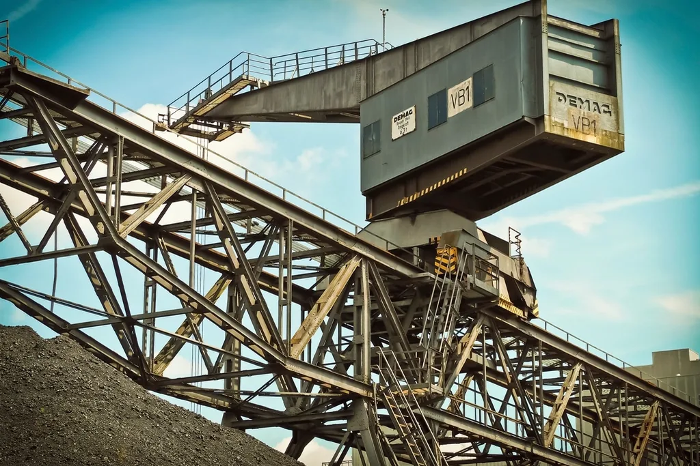

5
5
0
2dagen
Over twee weken kwam de externe auditor langs. Niemand wist zeker of het zou lukken.
Over Waalhaven Terminal
Waalhaven Terminal doet overslag van stukgoed. Vijfendertig medewerkers, ploegendienst, veel bezoekende chauffeurs op het terrein.

De uitdaging
De vorige audit had drie afwijkingen opgeleverd en een hertoetsing gekost. De directie wilde dat niet nog een keer, maar had geen zicht op wat er nu nog open stond.
- Een vorige audit met drie afwijkingen en een hertoetsing als gevolg.
- Geen zicht op wat er van die punten nog open stond.
“Twee dagen meelopen was genoeg. Hij zag dingen die wij al jaren niet meer zien.”
De aanpak
Twee dagen op locatie, met de norm ernaast, precies zoals een auditor het zou doen. Bevindingen dezelfde dag gedeeld, zodat er meteen aan gewerkt kon worden in plaats van na een rapport van twee weken later.
- Twee dagen op locatie met de norm ernaast, zoals een auditor het zou doen.
- Bevindingen dezelfde dag gedeeld in plaats van na twee weken.
- Een korte lijst met wat vóór de audit af moest en wat kon wachten.

Zelfde plek, ander resultaat
Vijf bevindingen, alle vijf opgelost voordat de auditor kwam. De audit sloot zonder afwijkingen.